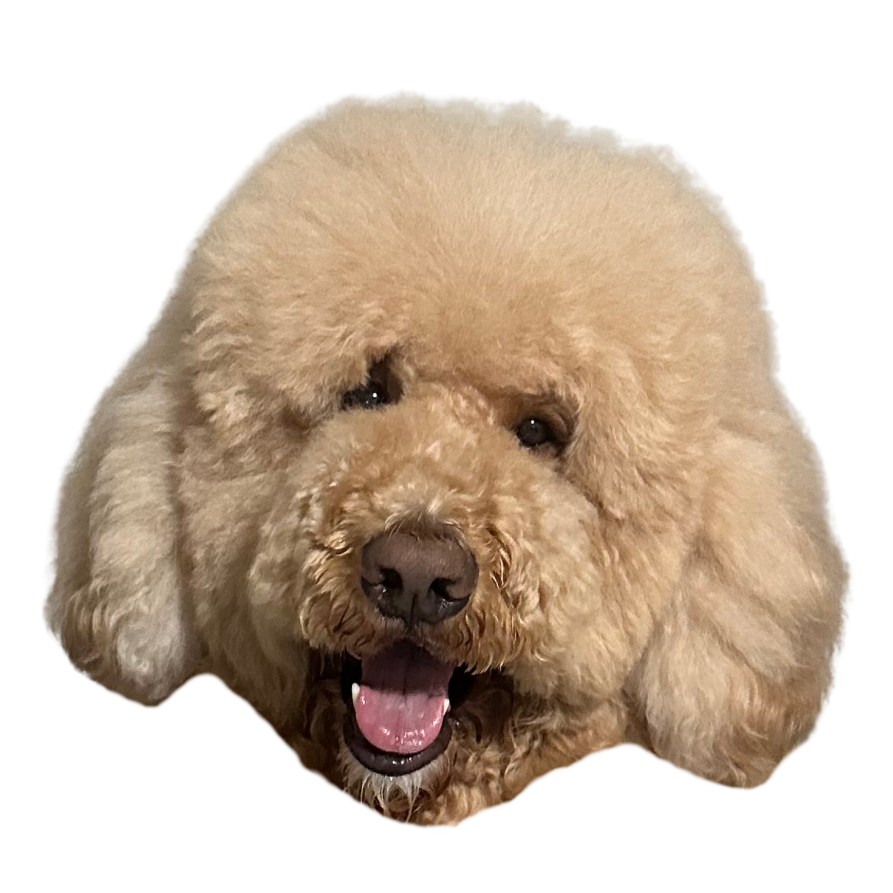
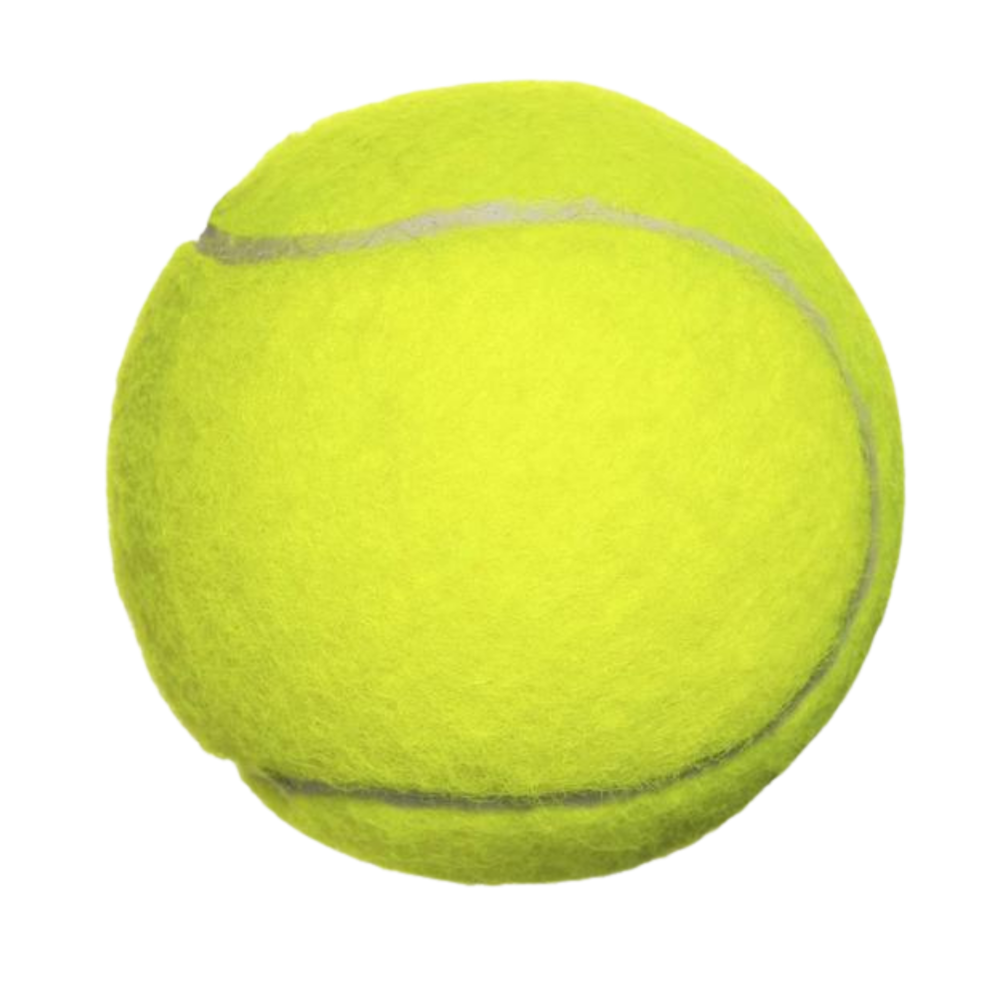
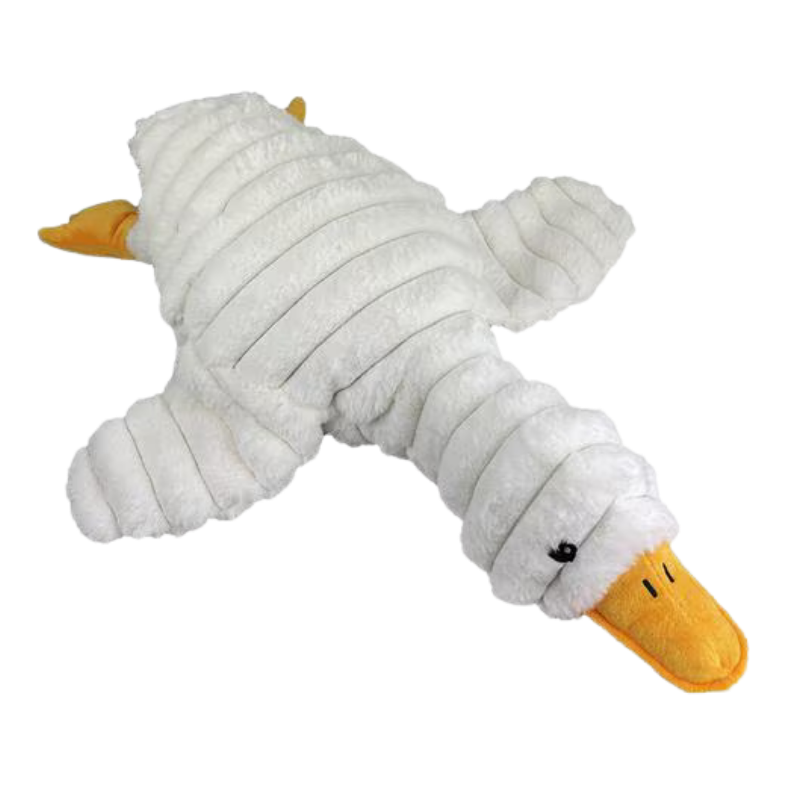
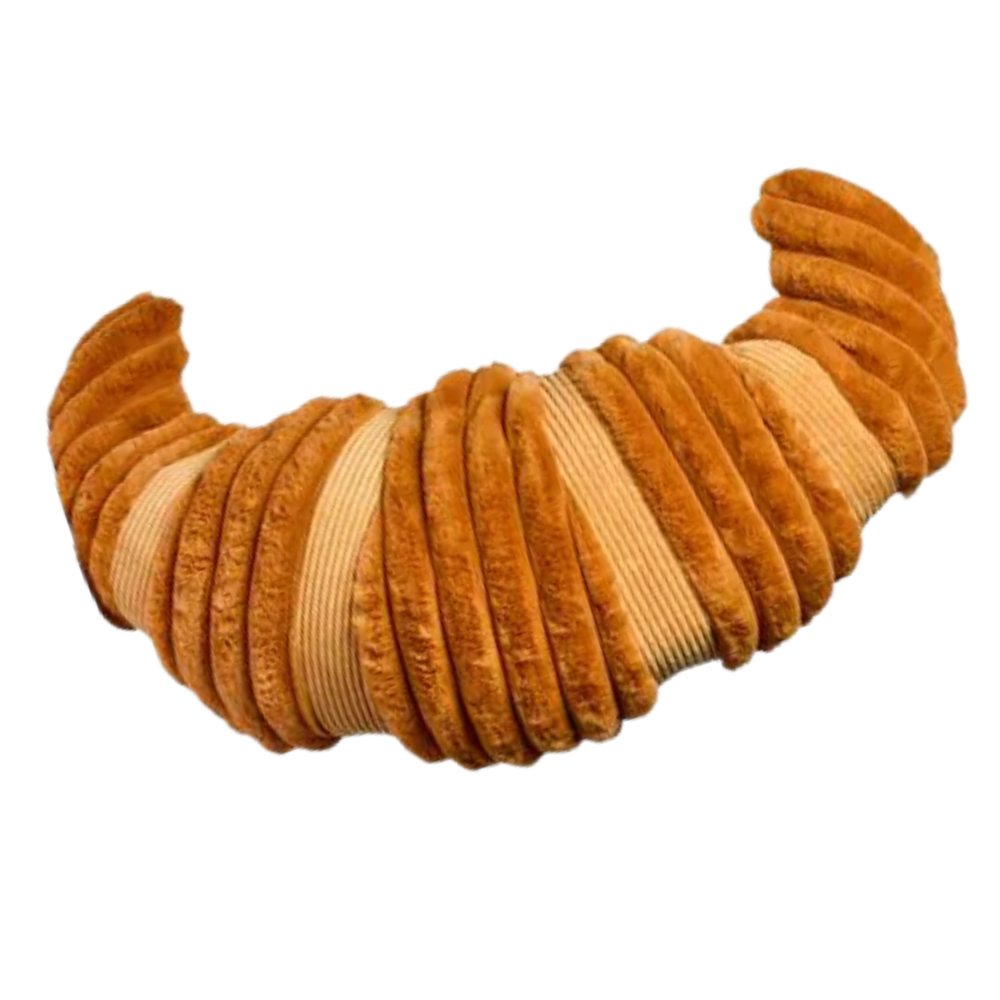
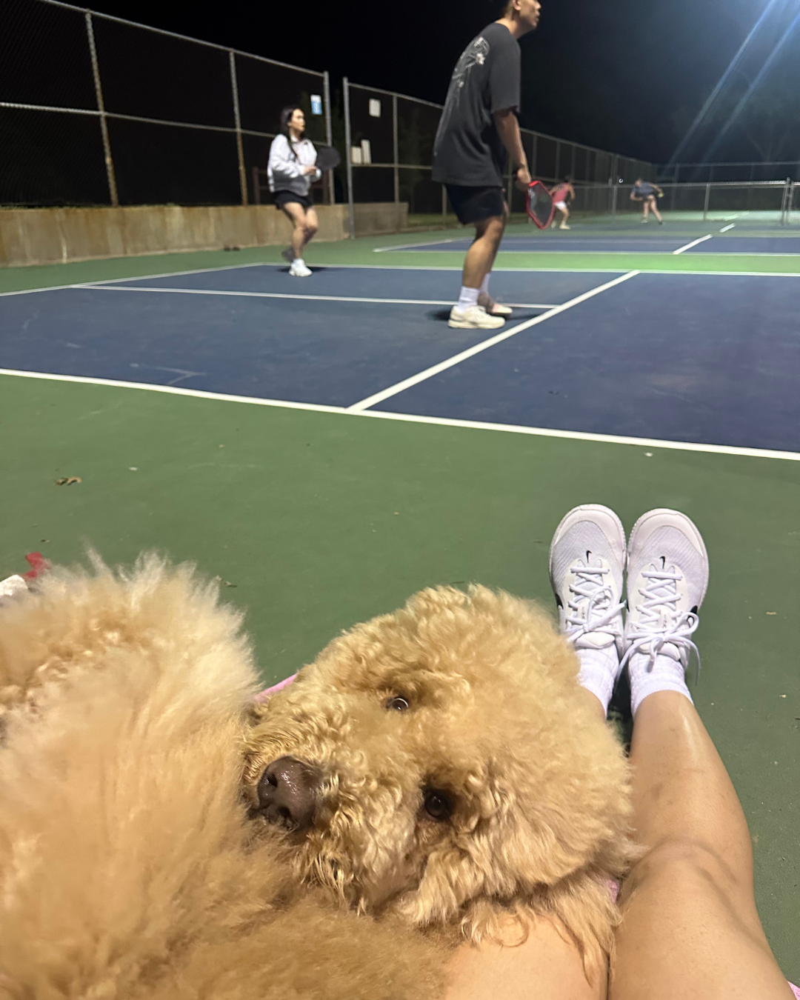
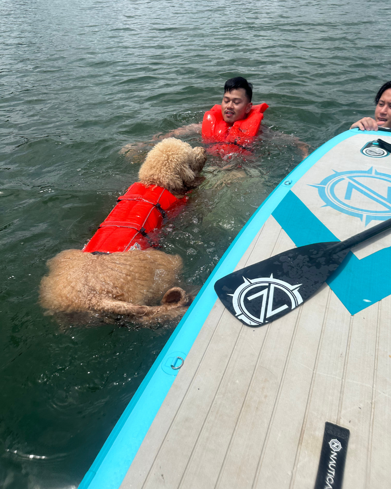

Hoshi is my 5-year-old Goldendoodle who loves to snuggle and has no idea what personal space is. He even lets me dress him up! He has struggled with separation anxiety and used to tear up the blinds when left alone, but he’s doing much better now.
Hoshi’s favorite toys are squeaky balls, ducks, and croissants. If it squeaks, it has his attention!



Hoshi loves tagging along wherever dogs are welcome, from parks to shopping trips at T.J. Maxx and Ross. He’s always ready for a little adventure!

